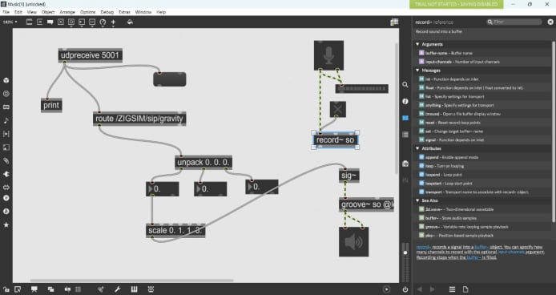
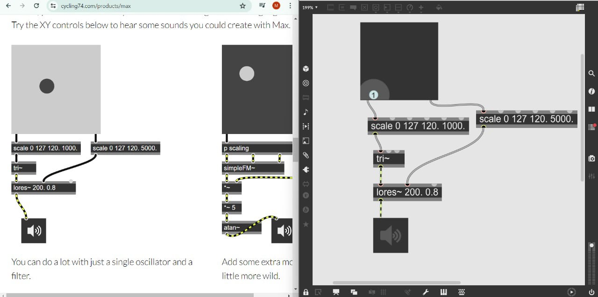
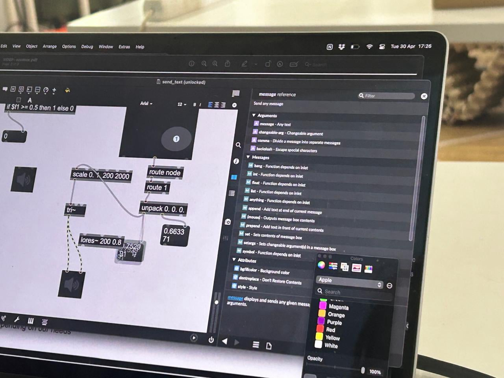
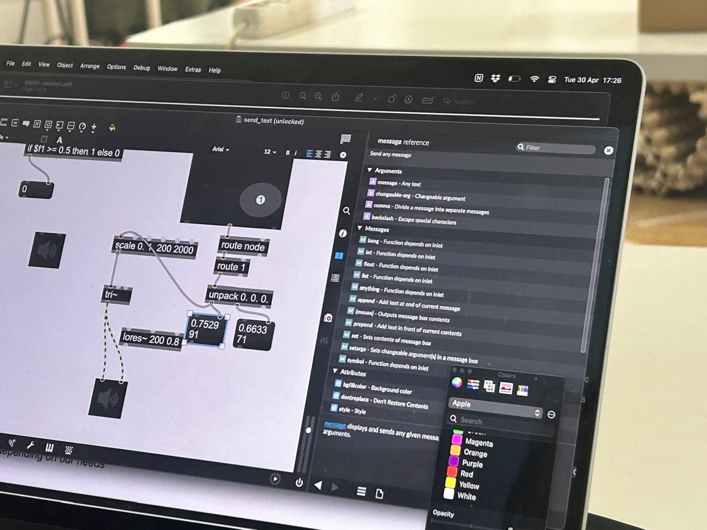

HTML Website GeneratorMax 8 is a visual programming language and environment primarily used for music and multimedia applications. It allows users to create interactive and customizable software systems by connecting virtual objects, called "objects" or "modules," with visual programming cables. Max 8 is often utilized by musicians, composers, artists, and designers to develop interactive installations, live performances, sound synthesis systems, and audiovisual compositions. Its flexibility and user-friendly interface make it accessible to both beginners and experienced programmers. In essence, Max 8 empowers users to explore and manipulate various media types, including sound, video, and graphics, through real-time manipulation and interaction, making it a versatile tool for creative expression and experimentation.
For the second digital prototyping module of the term, we learned about Max 8 and the depth of the software. We were taught about the different sound and sensor hepatics we could experiment and use. It was a fun, explorative tool that let us run our imaginations wild and gave us the space and platform to go crazy on. I had fun while working with this software as I used it to send messages to other IP addresses, to create a visual ball movement that allowed me to move it around to generate different frequencies of sound. I used this platform to have fun and do explorative stuff as it does not match with my final thesis project.




Engaging with Max 8 has been an exhilarating adventure into the world of creative expression and technological innovation. This software, with its intuitive visual programming interface and expansive range of functionalities, has proven to be a captivating tool for exploration and experimentation.
One of the most compelling aspects of Max 8 is its versatility. Whether you're interested in sound manipulation, visual synthesis, or sensor integration, Max 8 offers a wealth of possibilities. The ability to seamlessly connect and manipulate virtual objects, or "patches," through visual programming cables enables users to bring their ideas to life in real-time, fostering a dynamic and interactive creative process.
For those passionate about sound, Max 8 provides a playground for sonic exploration. From designing intricate synthesizers and effects processors to orchestrating complex compositions and live performances, the software offers boundless opportunities to shape and manipulate audio in innovative ways. Whether you're a musician, sound designer, or electronic artist, Max 8 empowers you to push the boundaries of sonic creativity.
Similarly, Max 8 is a treasure trove for visual artists and designers seeking to create immersive and interactive experiences. Through its robust set of visual programming tools, users can generate captivating graphics, manipulate video streams, and design interactive installations that respond to user input in real-time. The ability to combine visuals with sound and sensor data opens up a realm of possibilities for creating multi-sensory experiences that engage and captivate audiences.
Moreover, Max 8's compatibility with a wide range of sensors and external devices makes it an invaluable tool for those interested in exploring the intersection of technology and art. Whether you're integrating motion sensors, cameras, or biometric sensors, Max 8 provides the framework to incorporate real-world data into your creative projects, blurring the lines between the physical and digital realms.
As I reflect on my experience with Max 8, I am inspired by the endless possibilities it offers for creative expression and exploration. Moving forward, I am eager to delve deeper into the software, honing my skills and discovering new ways to incorporate its features into my projects. Whether it's creating immersive audiovisual experiences, designing interactive installations, or experimenting with sensor-driven interactions, Max 8 promises to be an invaluable ally on my creative journey.
HTML Website Generator